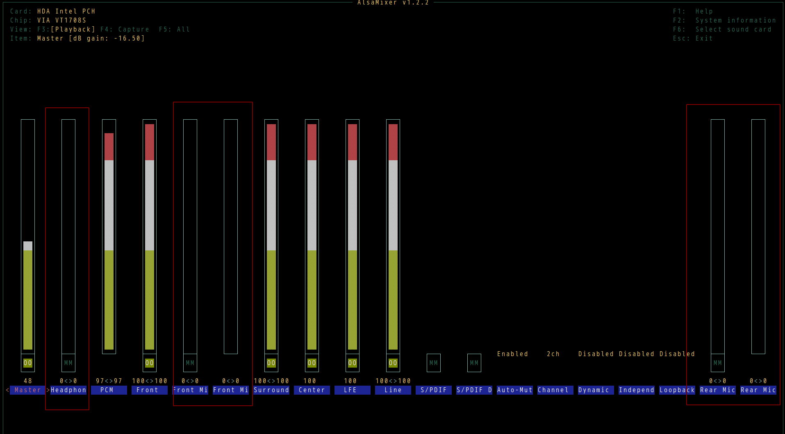
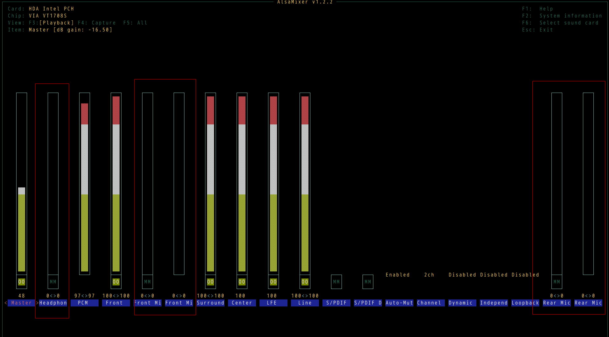

Audio recording on Linux
- Run
sudo alsamixerand turn off mic to reduce the noise - Run
alsamixerto double check pulse setup - Make sure correct device is selected in audacity
- Restart
audacityand test
My alsamixer setup,

sudo alsamixer and turn off mic to reduce the noisealsamixer to double check pulse setupaudacity and test
My alsamixer setup,
